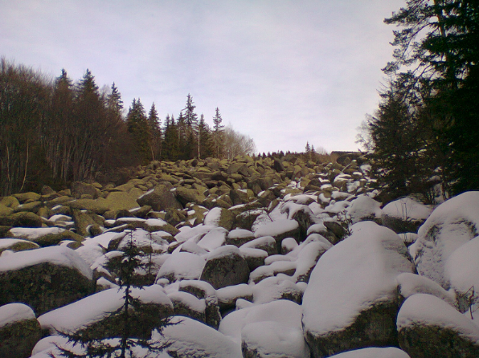
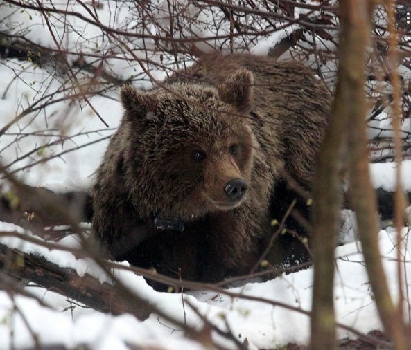
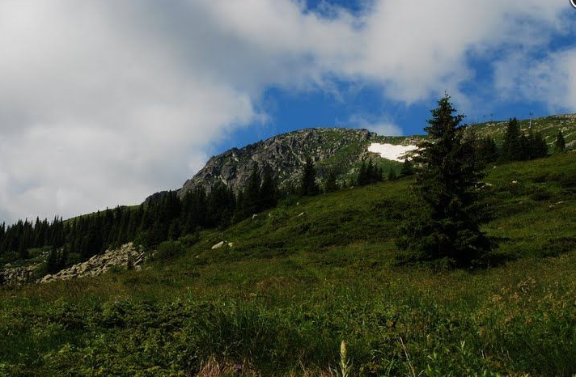
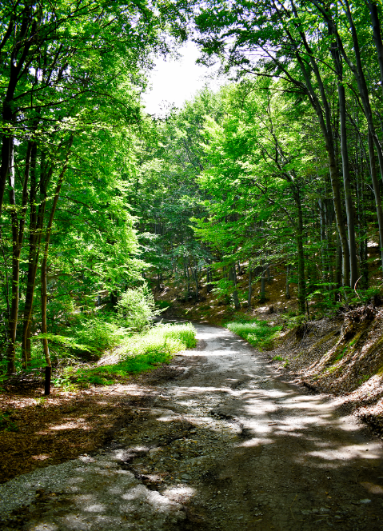
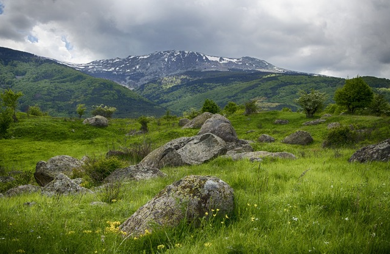
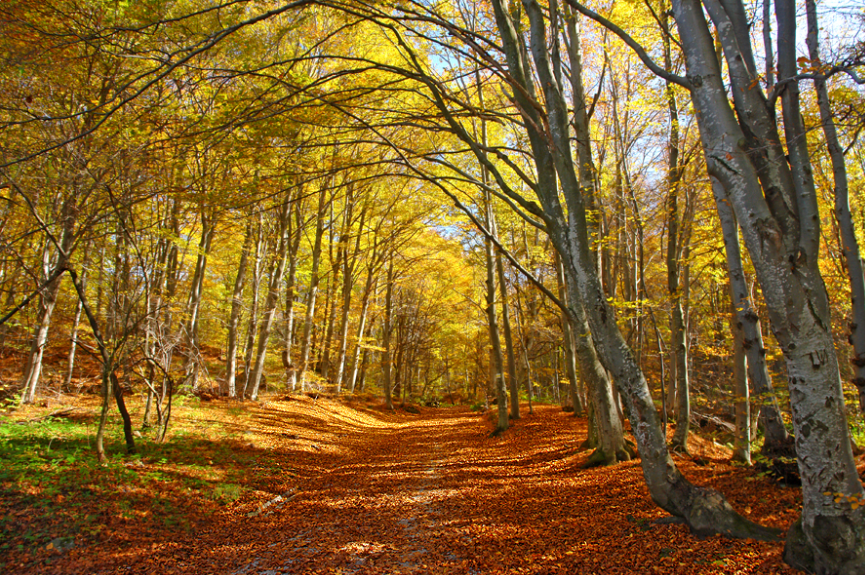

Година на обявяване: 1934
Площ: 27 079 ха
„Витоша” е първият парк
в България и на Балканския
полуостров.
Паркът
опазва ценни растителни
и животински видове –
тис, блатна
растителност, благороден
елен, сърна, диво прасе,
мечка, сокерица, боров
Подход от с. Кладница
С. Кладница – х. „Селимица”. Маркировката е лентова, червена. Продължителност на прехода: 40 мин.
С. Кладница – м. Три кладенци (3 ч. ) – Черни връх (4 ч.). Маркировката е лентова, червена. Продължителност на прехода: 4 ч.
С. Кладница – Владайска река ( водохващането ) (3 ч. 15 мин.) – с. Владая (4 ч.). Маркировката е лентова, жълта.
Продължителността на прехода е 4 ч.
Подход от с. Боснек
С. Боснек – м. Живата вода (1 ч. 20 мин.) – вр. Асланов рид (2 ч. 20 мин.) – с. Чуйпетлово (2 ч. 50 мин.). Продължителност на прехода: 2 ч. 50 мин.
С. Боснек – с. Горна Диканя. Продължителност на прехода: 2 ч.
Подход от с. Ярлово
С. Ярлово – вр. Погледец (30 мин.) – вр. Войчинов рид (2 ч. 20 мин.) – вр. Сива грамада (2 ч. 45 мин.) – вр. Скопарник (4 ч. 10 мин.) – Черни връх (5 ч. 10 мин.). Продължителност на прехода: 5 ч. 10 мин.
С. Ярлово – р. Чегарица (25 мин.) – м. Шаламанови егреци (1 ч. 25 мин.) – м. Тошови егреци (2 ч.) – Гръчка река (2 ч. 10 мин.) – м. Ярема (2 ч. 50 мин.). Продължителност на прехода: 2 ч. 50 мин.
С. Ярлово – седловината Бука преслап (1ч.) – водосливът на р. Добри дол с р. Клисурата (2ч.45мин.) – махала „Клисурата” на с. Горна Диканя (2ч.55мин.). Продължителност на прехода: 2 ч. 55 мин.
Трасетата са категоризирани съгласно български и международни стандарти:
– Маркирани в зелено са трасетата за начинаещи
– Маркирани в синьо са трасетата за средно напреднали
– Маркирани в червено са трасетата за напреднали.
– Маркирани в черно са трасетата за професионалисти, които предполагат провеждането на състезания от най-висок ранг
– Маршрут Д: м. Тихия кът – с. Кладница
– Маршрут Е: с. Ярлово – вр. Ярловски Купен – вр. Скопарник – з. Синята Стрела – с. Железница
– Маршрут О: с. Железница – кв. Бояна (през обиколната алея)
– Маршрут А: с. Боснек – заслон Смильо – с. Боснек (през Петрус)
– Маршрут Б: с. Боснек – м. „Живата вода“ – заслон Меча чешма – с. Чуйпетльово – с. Боснек
– Маршрут С: с. Кладница – м. Живата вода – с. Боснек
– Комините
– Дивите скали
– Учебни скали при хижа „Купена”
– Боулдър зона Златните Мостове
– Боулдър зона Бояна
– Боулдър зона Мърчаево
ПП „Витоша“ разполага с два информационни центъра – Природозащитен информационен център „Витоша“ и Национален парков информационен център, в които може да се получи информация за местата за нощуване заслони. За малките посетители е възможно използването на специално създадения Детски екостационар „Белите брези“, като част от атракциите са свързани с организиране на детски уъркшопове, интерактивни и презентационни мероприятия на природозащитна тематика. На територията на ПП „Витоша“ се намират Музеят на Мечката, Музеят на Совата и Музеят на Водното конче. Самият парк разполага и с хижи, разположени в него или в непосредствена близост, както и със ски писта за любителите на този тип екстремен спорт. За повече информация посетете официалният сайт на ПП "Витоша"